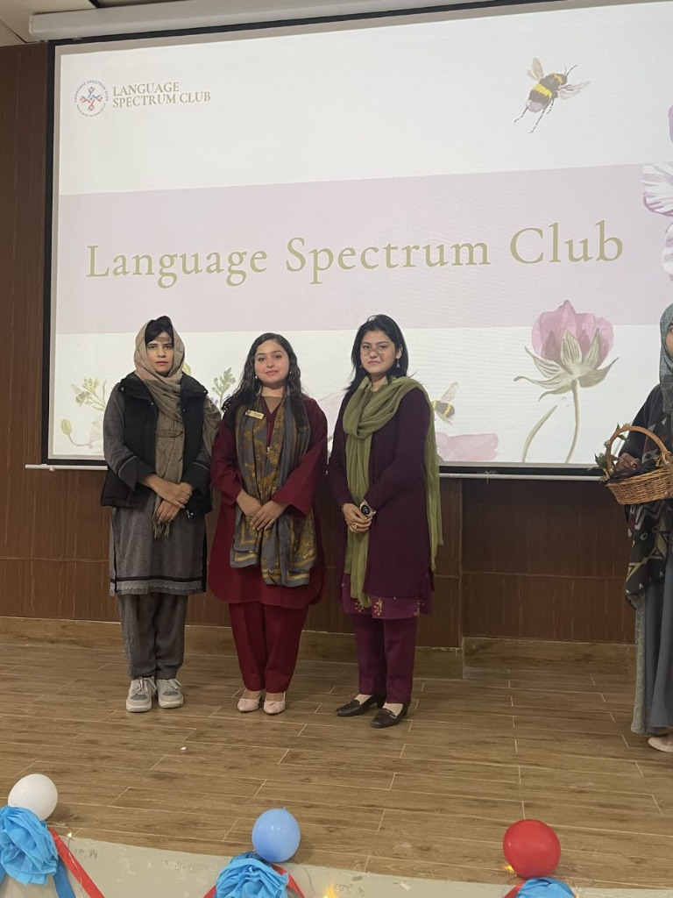

Language Spectrum Club
A significant initiative-based achievement is my role in founding and contributing to the Language Spectrum Club. This club focuses on promoting linguistic awareness and inclusive academic engagement within the university.

Through this platform, we organized workshops, discussions, and events that highlighted the diversity and power of language. My involvement went beyond just organization; it was about fostering a community where language lovers could connect and explore the nuances of communication.